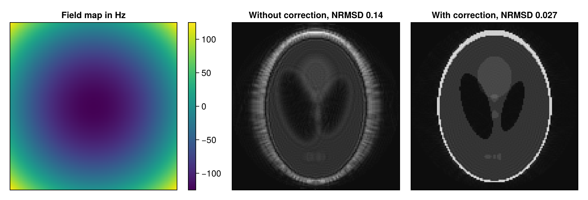

Correct Off-Resonance
During a long readout, as in spiral acquisitions, the signal of a voxel with an off-resonance frequency accumulates a phase, and a reconstruction that does not take this into account blurs or distorts the image. If a field map is known, the iterative reconstructions of MRIReco.jl include it in the encoding operator, as explained in Signal Model and Encoding Operators. This guide shows how to pass the field map, which reconstruction types use it, how to choose the approximation and which sampling times the correction needs.
Passing the Field Map
The reconstruction takes the field map as part of the correction map $z = R_2^* + \mathrm{i}\,\Delta\omega$, which models the signal of a voxel at the time $t$ as $\mathrm{e}^{-z t}$. Its imaginary part is the off-resonance frequency in radians per second, so a field map in Hz is multiplied by 2π. Its real part is the relaxation rate $R_2^*$ in 1/s and can be zero. MRIReco.jl does not estimate field maps; they usually come from a separate measurement. The example simulates a single-shot spiral with a readout of 30 ms through the parabolic field map with off-resonance frequencies between -125 Hz and 125 Hz from the simulations of Knopp et al.:
using MRIReco, MRISimulation
using ImageUtils: shepp_logan
N = 128
image = shepp_logan(N)
fieldmap = quadraticFieldmap(N, N, 125 * 2pi)
correctionMap = 1im .* fieldmap
simParams = Dict{Symbol, Any}()
simParams[:simulation] = "fast"
simParams[:trajName] = "Spiral"
simParams[:numProfiles] = 1
simParams[:numSamplingPerProfile] = N * N
simParams[:windings] = N ÷ 2
simParams[:AQ] = 30e-3
simParams[:correctionMap] = correctionMap
acqData = simulation(image, simParams)
size(correctionMap), eltype(correctionMap)((128, 128, 1), ComplexF64)The correction map is a complex array on the grid of the reconstruction, with the slices of 2D data in its third dimension; for a single slice, a matrix works as well. Its element type has to match the data, so the map of Float32 data is a ComplexF32 array; otherwise, the reconstruction fails with a TypeError. The iterative reconstructions take the map from params[:correctionMap]:
params = Dict{Symbol, Any}()
params[:reco] = "standard"
params[:reconSize] = (N, N)
params[:solver] = CGNR
params[:reg] = L2Regularization(1e-3)
params[:iterations] = 10
uncorrected = reconstruction(acqData, params)
params[:correctionMap] = correctionMap
corrected = reconstruction(acqData, params)The figure shows the field map and both reconstructions, with their normalized root mean squared deviation from the phantom, computed with nrmsd:
using CairoMakie
deviation(x) = round(nrmsd(image, abs.(x[:, :, 1, 1, 1, 1])), sigdigits = 2)
fig = Figure(size = (940, 320))
ax = Axis(fig[1, 1], title = "Field map in Hz", aspect = DataAspect(), yreversed = true)
hm = heatmap!(ax, fieldmap[:, :, 1]' ./ 2pi, colormap = :viridis)
hidedecorations!(ax)
Colorbar(fig[1, 2], hm)
images = [uncorrected => "Without correction", corrected => "With correction"]
for (i, (x, title)) in enumerate(images)
ax = Axis(fig[1, i + 2], title = "$title, NRMSD $(deviation(x))", aspect = DataAspect(),
yreversed = true)
heatmap!(ax, abs.(x[:, :, 1, 1, 1, 1])', colormap = :grays)
hidedecorations!(ax)
end
fig
A map in Hz instead of radians per second corrects hardly anything, and a map with the opposite sign makes the image worse than no correction, which helps to check the convention of a measured map. In two images that MRIReco.jl reconstructs from echoes at the times $t_1$ and $t_2$, the phase of a voxel changes by $-\Delta\omega\,(t_2 - t_1)$. MRIFieldmaps.jl estimates field maps from such images in Hz and with the opposite sign, $f = -\Delta\omega/2\pi$, so the correction map is $-2\pi\mathrm{i} f$, or ComplexF32.(-2pi * 1im .* f) for Float32 data.
Reconstruction Types
All iterative reconstruction types take the map from params[:correctionMap]: "standard", "multiCoil", "multiEcho", "multiCoilMultiEcho" and "multiCoilMultiEchoSubspace". For 2D data with several slices, "multiCoilMultiEcho" and "multiCoilMultiEchoSubspace" correct every slice with the map of the first slice (#362).
The direct reconstruction ignores params[:correctionMap] and takes the map from params[:cmap] instead (#296), always with the approximation "nfft" described below. It then computes a conjugate phase reconstruction, which in the example is less accurate than the iterative correction, with an NRMSD of 0.044.
Choosing the Approximation
The encoding operator approximates $\mathrm{e}^{-z t}$ by a sum of $K$ terms and computes up to $K$ NFFTs whenever it is applied. The parameter params[:method] chooses how:
"nfft", the default, determines $K$ from the ranges of the map and of the readout times and ignoresparams[:K]. In the example, it uses 14 terms."leastsquare"fits $K$ time segments, set byparams[:K], to the values of all voxels. It builds a matrix with one entry per voxel and sample, which takes much memory and time for larger images."hist"fits the time segments to a histogram of the map and is therefore much faster. It fails for maps with both a relaxation and an off-resonance part (#360)."svd"derives at mostparams[:K]functions of time from the off-resonance part, as many asparams[:K_tol]requires. It takes them from the first profile and fits them to every tenth sample of it, so its result is wrong without an error if the profiles have different sampling times or if a profile has fewer than about ten samples per function. It also fails forFloat32data, such as data from files (#363).
With too few terms, the correction can make the image worse than no correction. In the example, $K = 2$ does so for "leastsquare" and "hist", and from $K = 12$ on, all three data-driven methods are about as accurate as "nfft". The default "nfft", which needs no further parameters, is therefore the method to start with. The keywords alpha and m of FieldmapNFFTOp are not passed on by the reconstruction, and the methods "leastsquareFS" and "histFS" fail (#345).
Sampling Times
The correction uses the sampling times of the trajectory of each contrast, for example readoutTimes(trajectory(acqData, 1)) for the first one, and counts them from its echo time, echoTime(trajectory(acqData, 1)). It therefore reconstructs the magnetization at the echo time. In the example, times that are 10 % too small or too large raise the NRMSD of the corrected image from 0.027 to 0.04.
For AcquisitionData converted from RawAcquisitionData, as for ISMRMRD and Bruker files, the times of a non-Cartesian trajectory start at zero at the beginning of each readout and follow the sampling interval in the profile headers, and the echo time is zero. For a Cartesian trajectory, the times are placeholders that span 1 ms per profile. If they don't match the acquisition, set the fields times and TE of the trajectories, one per contrast and in seconds, for example for 2D Cartesian data with one profile per excitation and the sampling interval dt: for tr in acqData.traj; tr.times .= repeat(dt .* (0:numSamplingPerProfile(tr)-1), numProfiles(tr)); end. In a gradient-echo train, such as EPI, the times continue from one profile to the next.
Limits
- The correction map of 3D data makes the reconstruction fail with a
MethodError(#361). - If the map of a slice is spatially constant, for example zero while the other slices have a map,
"nfft"returns NaN for this slice, and the other methods fail, except"leastsquare"for a constant other than zero (#360). A map that is zero in every slice is not used at all.
This page was generated using Literate.jl.